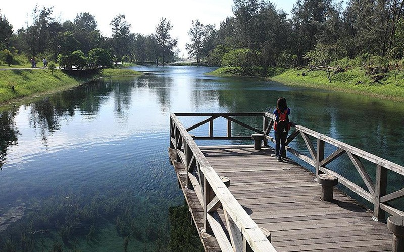
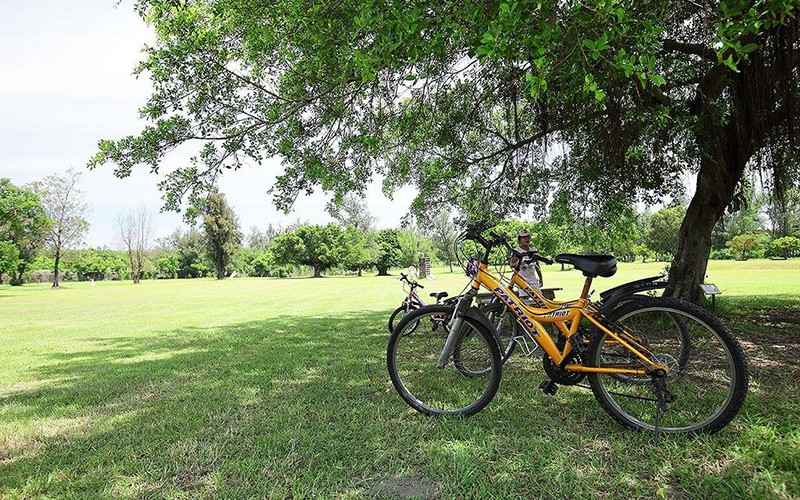
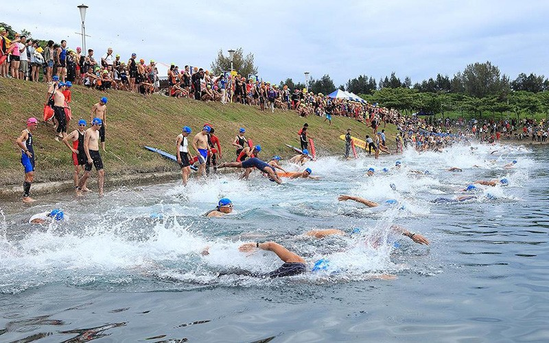
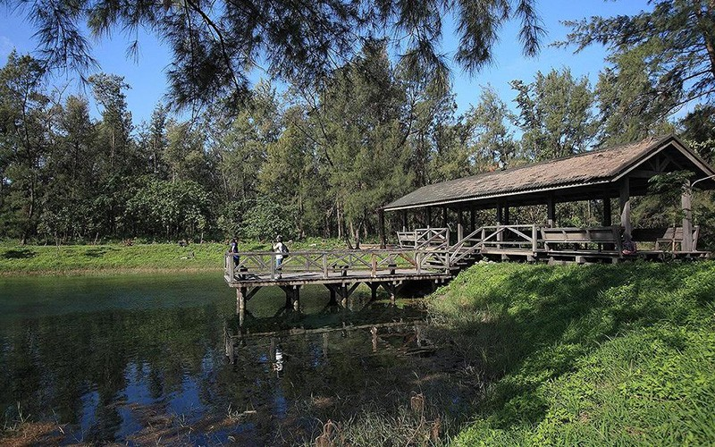
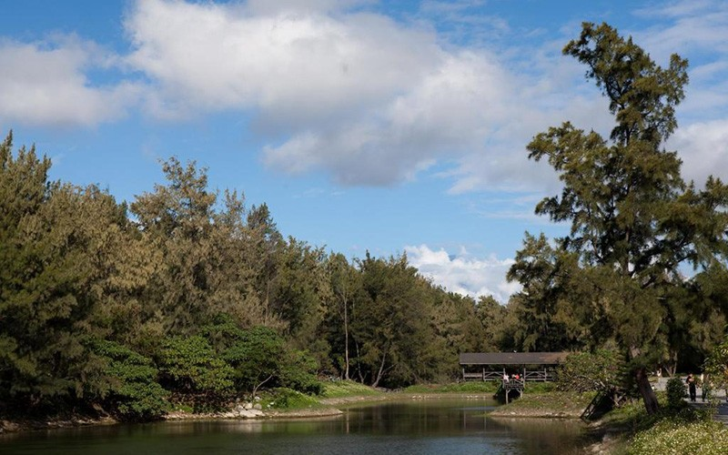
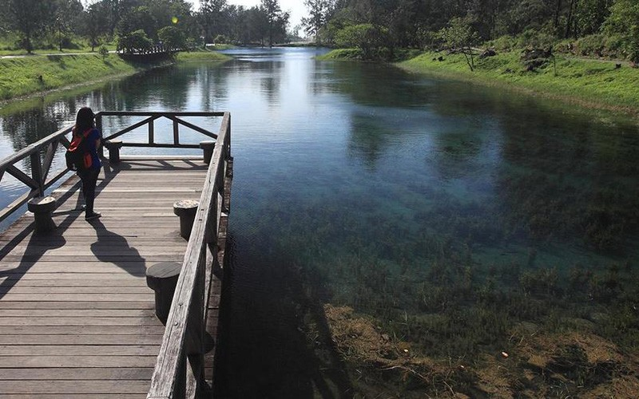
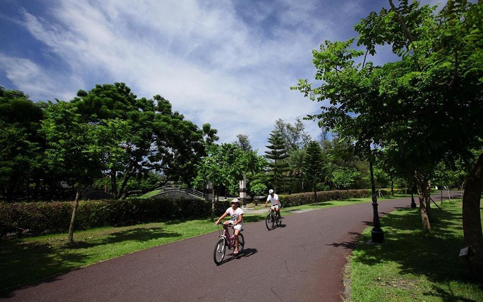
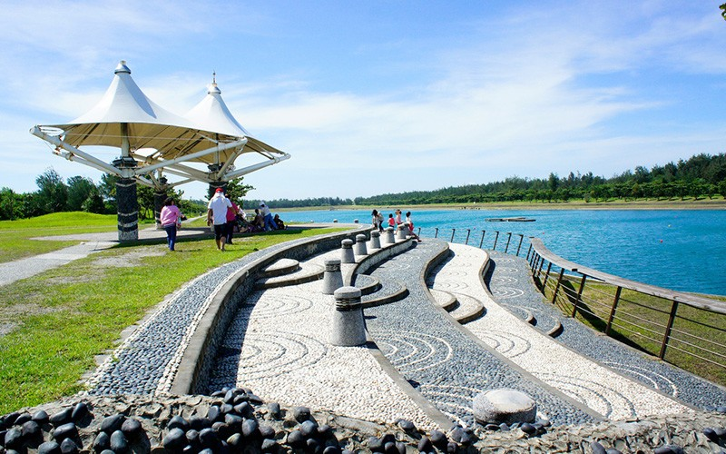
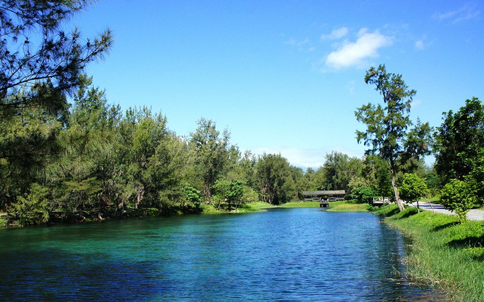
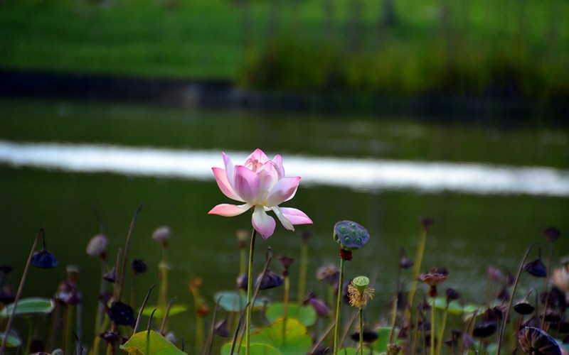
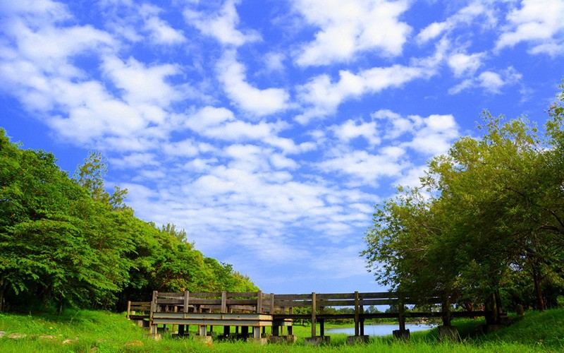
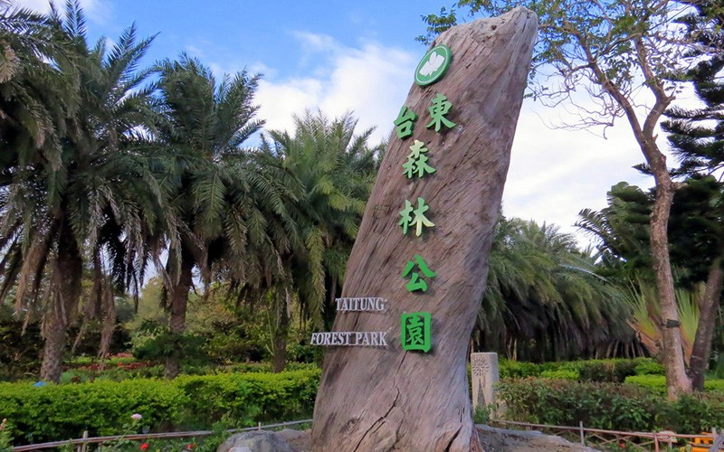
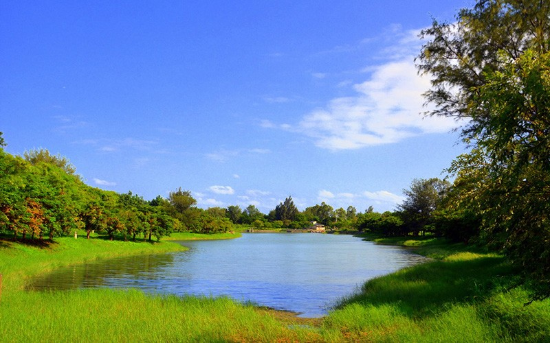
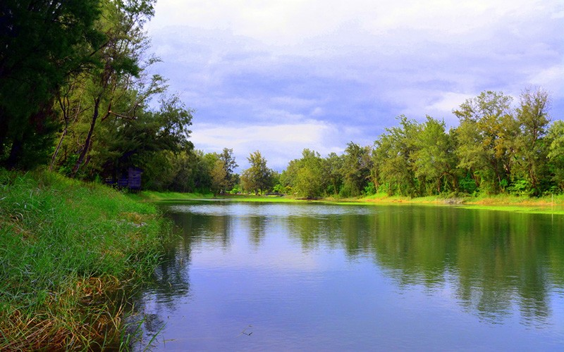
臺東森林公園
開闊的臺東森林公園距離臺東市僅幾分鐘車程，沿著馬亨亨大道即可到達，是一處令人流連忘返的公園，沒有過多的人工造景，觸目所及盡是讓人心情舒暢的自在氛圍。滿是綠意的臺東森林公園，非常適合騎著單車悠遊，享受一場與自然共舞的時光。
介紹
玩樂攻略
-十分適合騎單車或健行
-與山海鐵馬道、國際地標相連
-擁有豐富的河口海濱溼地生態
-是賞鳥人士必造訪的景點
-如明鏡般清澈的琵琶湖是熱門拍照的地方
臺東森林公園舊稱「黑森林」，位於卑南溪出海口，由於整片區域為了防風而種植木麻黃，遠看林相一片漆黑而得名。臺東森林公園到市區僅需幾分鐘的車程，遼闊的園區內擁有豐富的河口海濱溼地生態、廣大的草地與茂盛的森林，而自行車道穿越木麻黃林並串聯琵琶湖、活水湖、鷺鷥湖三處湖泊，平緩的車道騎起來十分舒適，很適合親子踏青騎鐵馬，享受悠閒的午後時光，欣賞湖光山色的美景。
湖泊之美
臺東森林公園擁有三座湖，分別為地下湧泉形成的「琵琶湖」、原本為沼澤濕地後經過整治的「鷺鷥湖」，與人工興建能夠舉辦各項水域及鐵人競賽活動的「活水湖」，其中湖水清澈見底的琵琶湖，在微風吹拂下使湖面起陣陣漣漪，水面倒映著週遭綠意的森林與藍天白雲，如畫般的風景，是旅人來這裡必拍照的景點。
騎鐵馬征服臺東森林公園與國際地標吧
騎乘時間：約2小時（來回）
園區內的自行車道與山海鐵馬道、國際地標相連，一路上森林景致優美，經過琵琶湖一覽夢幻美景最後抵達海濱公園，讓人能夠一次騎鐵馬享受森林與海洋的風景。
【資料來源：臺東觀光旅遊網】
臺東森林公園開闊的臺東森林公園距離臺東市僅幾分鐘車程，沿著馬亨亨大道即可到達，是一處令人流連忘返的公園，沒有過多的人工造景，觸目所及盡是讓人心情舒暢的自在氛圍。滿是綠意的臺東森林公園，非常適合騎著單車悠遊，享受一場與自然共舞的時光。介紹玩樂攻略-十分適合騎單車或健行-與山海鐵馬道、國際地標相連-擁有豐富的河口海濱溼地生態-是賞鳥人士必造訪的景點-如明鏡般清澈的琵琶湖是熱門拍照的地方臺東森林公園舊稱「黑森林」，位於卑南溪出海口，由於整片區域為了防風而種植木麻黃，遠看林相一片漆黑而得名。臺東森林公園到市區僅需幾分鐘的車程，遼闊的園區內擁有豐富的河口海濱溼地生態、廣大的草地與茂盛的森林，而自行車道穿越木麻黃林並串聯琵琶湖、活水湖、鷺鷥湖三處湖泊，平緩的車道騎起來十分舒適，很適合親子踏青騎鐵馬，享受悠閒的午後時光，欣賞湖光山色的美景。湖泊之美臺東森林公園擁有三座湖，分別為地下湧泉形成的「琵琶湖」、原本為沼澤濕地後經過整治的「鷺鷥湖」，與人工興建能夠舉辦各項水域及鐵人競賽活動的「活水湖」，其中湖水清澈見底的琵琶湖，在微風吹拂下使湖面起陣陣漣漪，水面倒映著週遭綠意的森林與藍天白雲，如畫般的風景，是旅人來這裡必拍照的景點。騎鐵馬征服臺東森林公園與國際地標吧騎乘時間：約2小時（來回）園區內的自行車道與山海鐵馬道、國際地標相連，一路上森林景致優美，經過琵琶湖一覽夢幻美景最後抵達海濱公園，讓人能夠一次騎鐵馬享受森林與海洋的風景。
Taitung Forest Park Taitung Forest Park is only a few minutes away from Taitung City by car along Mahengheng Boulevard. Visitors enjoy the park’s relaxing natural setting. A great way to enjoy Taitung Forest Park’s greenery is on a leisurely bike ride. Introduction How to Have Fun -Great for cycling or hiking -Connected with Taitung Bike Path, and International Landmark -Has rich river-mouth and seaside wetland ecology -Perfect for bird watchers -The mirror-clear Pipa Lake is a popular spot for photos. The Taitung Forest Park used to be called “black forest” because it was located where Beinan River meets the sea, and the horsetail trees planted for protection from the wind seemed to create total darkness when seen from a distance. Taitung Forest Park is only a few minutes away from Taitung City by car, and there is rich river-mouth and seaside wetland ecology, vast grasslands, and lush forests in the wide open park. Also, the bicycle path passes through the horsetail forest and connects Pipa Lake, Flowing Lake, and Lusih Lake. The gentle road is comfortable to ride on, making it very suitable for families to enjoy a relaxing afternoon and appreciate the beautiful lake and mountain scenery. Beautiful Lakes Taitung Forest Park has three lakes. Pipa Lake was formed by an underground spring; Lusih Lake was renovated from a wetland; and Flowing Lake was artificially constructed and is ideal for water sports and triathlon events. Pipa Lake is so clear that you can see all the way to the bottom. Breezes create ripples on the lake as it reflects the surrounding trees, blue sky, and white clouds. The picturesque scenery makes this an ideal spot for taking pictures. Cycle and Conquer Taitung Forest Park, and International Landmark Time of ride: About 2 hours (round trip) The bicycle path within the park connects to Taitung Bike Path, and International Landmark. There is beautiful forest scenery along the road that takes you from the dreamy scenery of Pipa Lake to Seaside Park. Enjoy forest and ocean scenery on one bike ride.
台東森林公園 広々とした台東森林公園は、台東市から車で馬亨亨大道沿いに数分進んだ所にあり、心惹かれて止まない美しい公園です。人工的な造園が少なく、どこを見渡してもくつろげる、のびやかな雰囲気が感じられます。自然に溢れる台東森林公園は、サイクリングで自然との触れ合いを楽しむのに最適です。 紹介 レジャーのポイント -サイクリングやハイキングに最適 -山海サイクリングロード、国際地標モニュメントと連なっています -河口や海辺の湿地生態が豊富 -絶好のバードウォッチングスポット -澄みきった湖水が美しい琵琶湖は、人気の撮影スポット 卑南渓河口に位置する台東森林公園は、防風のために全域にマオウの木が植えられ、遠くから見ると真っ黒な林に見えることから、かつては「黒い森」と呼ばれていました。台東森林公園は市街地まで車でわずか数分の距離にあります。広大な園内は、河口や海辺の湿地生態が豊富で、草地が広がり、木々が生い茂っています。サイクリングロードは、マオウ林を通過して琵琶湖、活水湖、鷺鷥湖の三つの湖へ通じ、平坦で走り心地がいい道です。親子のサイクリングに最適で、午後の時間をのんびりと過ごし、湖や山の景色を楽しむことができます。 湖の美 台東森林公園には、地下からの湧き水によってできた「琵琶湖」、沼と湿地を整備して作られた「鷺鷥湖」、アクアスポーツやトライアスロン大会が行われる人工湖「活水湖」の三つの湖があります。なかでも澄み切った湖水が美しい琵琶湖は、そよ風に吹かれてさざ波が立ち、周囲を取り囲む緑色の森林と青空、白雲が湖面に映って絵画のような風景を成す絶好の撮影スポットです。 サイクリングで台東森林公園と国際地標モニュメントを制覇する サイクリング所要時間：約2時間（往復） 園内のサイクリングロードは山海サイクリングロード、国際地標モニュメントとひと続きになっています。優美な森林の眺めが続き、幻想的な琵琶湖を経由するこの道でのサイクリングでは、森林と海の風景を一度に楽しむことができます。